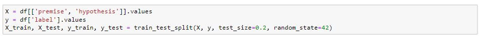
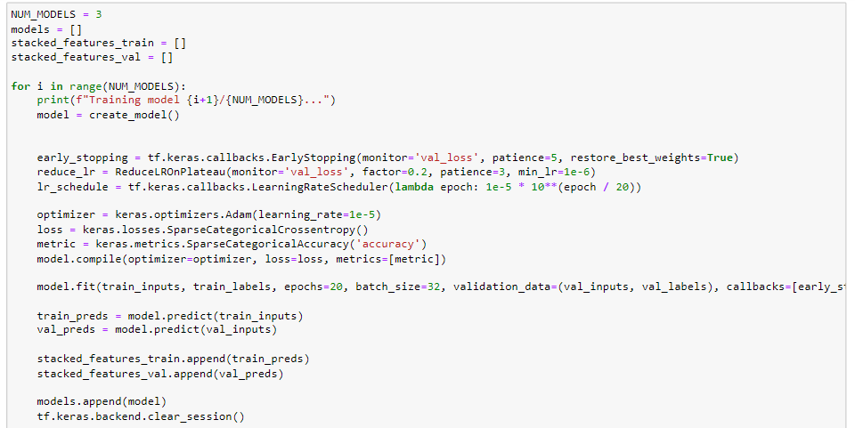
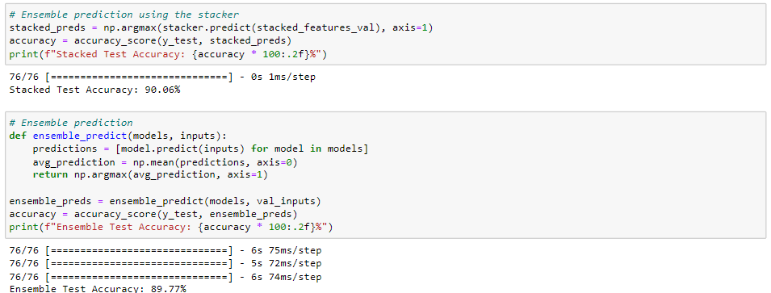
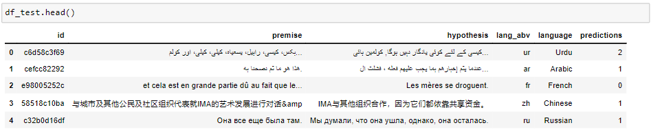

Exploring Multilingual Text Relationships

PROJECT OVERVIEW
The project focuses on developing and assessing Natural Language Inference (NLI) models to delve into Multilingual Text Relationships. The model aim to predict whether a given hypothesis aligns with its premise through contradiction, entailment, or neutrality. We delve into diverse aspects such as model architectures, data preprocessing, training strategies, ensemble learning, and performance analysis, focusing on multilingual models like ROBERTA, mBERT, XLM RoBERTa, and a unique ensemble of XLM-RoBERTa as a base model trained on SNLI, MNLI, ANLI, and XNLI datasets with Stacking and Averaging techniques.
In our analysis of NLI models for the "Contradictory, My Dear Watson" Kaggle competition, we found that the ensemble stacking method, with XLM-RoBERTa as the foundation, achieved the highest test accuracy in predicting sentence relationships based on hypotheses and premises.
The primary performance metric is accuracy. A powerful acknowledgment from our reflection underscores the critical role of ensemble learning in enhancing NLI performance, ensuring the model's effectiveness in real-world scenarios.
ABOUT OUR DATASET
The data is derived from kaggle. It consists text in fifteen languages, steps involve data extraction from a DataFrame, utilizing 'premise' and 'hypothesis' columns as input features, and the 'label' column as target labels. This diverse dataset includes text in various languages like English, Spanish, French, Hindi, and Russian, totaling 12,120 rows and 8 columns.
The label distribution is defined as follows:
0 = Entailment
1 = Neutral
2 = Contradiction
TOOLS AND TECHNOLOGIES
Natural Language Interface Models: Transformers, RoBERTa, mBERT, XML-RoBERTa,
Deep learning libraries: Keras, TensorFlow, Python, Scikit-learn, pandas, NumPy, Matplotlib
Model evaluation and performance metrics: Accuracy Score, Learning Rates, Early Stopping, Dropout Regularizations, Ensemble strategies(Stacking and Averaging)
Optimizer functions: Adam
Activation functions: Softmax, ReLU
BEST PERFORMANCE MODEL: Natural Language Inference using Ensemble of XLM-RoBERTa, trained on SNLI, MNLI, ANLI, and XNLI datasets Wwith Stacking and Averaging
This code exemplifies an ensemble approach for Natural Language Inference (NLI) using finetuned XLM-RoBERTa models, incorporating data from SNLI, MNLI, ANLI, and XNLI datasets. By leveraging ensemble techniques such as stacking and averaging, it enhances NLI accuracy. SNLI serves as the foundational dataset for assessing logical relationships between sentence pairs, while MNLI extends this by encompassing diverse genres and styles. ANLI introduces adversarial sentence pairs to evaluate model robustness against challenging language variations. Finally, XNLI extends NLI to cross-lingual scenarios, improving the model's performance in understanding sentence relationships across multiple languages, making this approach highly versatile and comprehensive in addressing NLI challenges.
STEPS
-
Extracting data from a DataFrame (df):
- Separates the premises and hypotheses from the input data.
- Utilizes the XLM-RoBERTa tokenizer to tokenize the text data and applies tokenization parameters, including padding sequences to the maximum length, truncation of longer sequences, by a maximum sequence length of 128 characters.
- The function "get_encodings(data)" then converts the tokenized data into TensorFlow tensors and returns a dictionary of inputs suitable for the model.
- Each model undergoes the same training procedure with the following specifications:
- Early stopping is implemented to monitor the validation loss and restore the weights corresponding to the best performance.
- A learning rate reduction strategy, specifically ReduceLROnPlateau, is employed to dynamically adjust the learning rate during the training process.
- A defined learning rate schedule is implemented.
- The optimizer, loss function, and evaluation metric are appropriately configured.
- Training is executed on the training dataset for a fixed number of epochs (20 in this case), utilizing a specified batch size.
- Training predictions are stored to facilitate later ensemble stacking.
The 'premise' and 'hypothesis' columns are selected and stored in variable X, representing the input text data for the NLI task. The labels associated with each NLI tasks are extracted and stored in the variable y
Tokenizing and Encoding the Data:
A custom function, get_encodings(data), is defined for tokenizing and encoding the input data.
This function performs the following tasks:
Training Multiple Model:
Multiple models are instantiated and undergo fine-tuning. The code iterates through the creation and training of these models, adhering to a consistent training process and configuration:
We have used Symanto's "symanto/xlm-roberta-base-snli-mnli-anli-xnli" model, released in 2022, which is designed for natural language inference. It is based on a cross-lingual RoBERTa architecture fine-tuned on datasets like SNLI, MNLI, ANLI, and XNLI, making it a versatile tool for language understanding tasks.
Ensemble Stacking and Prediction:
Ensemble Stacking:
After training the models, their predictions on the training and validation datasets are stored for ensemble stacking. The stacking model is defined with dense layers, dropout, and softmax activation.
Ensemble Prediction:Two ensemble prediction strategies are implemented and the stacked model's predictions are evaluated, and its accuracy is reported. And then the Ensemble Predictions from individual models are combined using averaging, and the accuracy of the ensemble is reported.
The code showcases an ensemble learning approach for NLI using XLM-RoBERTa models fine-tuned on diverse datasets. It leverages stacking and averaging strategies to achieve higher accuracy in NLI tasks. The stacking model demonstrates a test accuracy of around 90.06%, while the ensemble strategy yields an accuracy of approximately 89.77%. These results highlight the effectiveness of ensemble techniques for NLI.
PERFORMANCE METRICS
- RoBERT: The RoBERTa model showed the lowest performance, due to its relatively simple architecture. This model achieved a test accuracy of 63.04% we have considered it as the base model to compare the model performance with other multilingual models.
- mBERT:This model showed improvement over the RoBERT by achieving a test accuracy of 65.72%.
- XLM-RoBERTa Fine-Tunined with Custom Architecture and Dropout Regularization: The XML-RoBERTa model improved the accuracy by implementing early stopping to evaluate the model's performance on the test. The model achieved a test accuracy of approximately 68.8% and a test loss of approximately 0.730.
- XML-RoBERTa with layer-wise fine-tuning: Fine Tune XML-RoBERTa model improved the accuracy by implementing custom architecture and dropout regularizations. The model achieved a test accuracy of approximately 70.12% and a test loss of approximately 0.71 after training.
- Ensemble Learning for NLI with Stacking and Averaging Strategies on XLM-RoBERTa: The ensemble learning with stacking and averaging on xlm-roberta resulted in a minor accuracy increase of about 70.50%, showcasing the effectiveness of the ensemble strategy
- Ensemble Learning with L2 Regularization on XLM-RoBERTa: By applying ensemble learning with stacking, averaging, and L2 regularization on xlm-roberta with bidirectional LSTM led to improved prediction performance. The stacked model achieved a test accuracy of around 70.79%, while the ensemble strategy yielded approximately 70.87% accuracy, affirming the effectiveness of ensemble techniques.
- Natural Language Inference using Ensemble of XLM-RoBERTa trained on SNLI, MNLI, ANLI, and XNLI Datasets with Stacking and Averaging: An ensemble of Xlm-Roberta trained on SNLI, MNLI, ANLI, and XNLI datasets with stacking and averaging demonstrated a robust approach for NLI. The stacking model achieved a test accuracy of about 90.06%, while the ensemble strategy showed an accuracy of approximately 89.77%. These results underscore the effectiveness of ensemble techniques in enhancing accuracy in NLI tasks.
OBSERVATIONS AND BUSINESS IMPACT
The XML RoBERTa model, trained on a diverse range of datasets including SNLI, MNLI, ANLI, and XNLI, and enhanced with stacking and averaging techniques, demonstrated remarkable proficiency in predicting sentence pairs based on premise-hypothesis relationships. With an ensemble strategy, it achieved an impressive accuracy of 89.77% in discerning whether the sentences are entailed, contradictory, or neutral to each other. Additionally, the model exhibits multilingual capabilities, accurately predicting the language of input sentences from a pool of 15 different languages. This comprehensive approach underscores the model's robustness and versatility in understanding and analyzing textual data across various linguistic contexts.

Our Model has practical implications, which can lead to the development of more robust NLI systems that can benefit businesses and social welfare:
1. Fact-Checking: The NLI (Natural Language Inference) model can undergo further refinement and be applied by news organizations for the development of a robust fact-checking tool. This tool can be instrumental in verifying the accuracy of political statements, particularly during election campaigns. By leveraging the NLI model, news organizations can empower citizens with reliable information, enabling them to make well-informed voting decisions based on verified and credible sources.
2. Fake News Detection: The NLI (Natural Language Inference) model can undergo further fine-tuning and be harnessed across social media platforms. By implementing NLI models, these platforms can automate the identification and labeling of potentially false or misleading content. This proactive approach helps in mitigating the dissemination of fake news and disinformation, contributing to a more trustworthy and reliable online environment.
3. Sentiment Analysis: The NLI (Natural Language Inference) model can be further fine-tuned and applied in a restaurant chain for sentiment analysis. This can help analyze customer reviews and pinpoint specific areas that require improvement. By leveraging the insights gained from the NLI model, the restaurant chain can make informed decisions, leading to menu adjustments and overall enhancements in the dining experience.